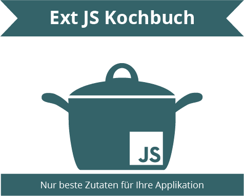

Ext JS Kochbuch
Willkommen zum kleinen Ext JS (und Ext.NET) Kochbuch.
Dieses Dokument soll als detailliertere Erläuterung zum Ext JS Workshop von Johannes Hoppe dienen.
Sollten Sie nicht weiter geleitet werden, so geht es
hier weiter
.